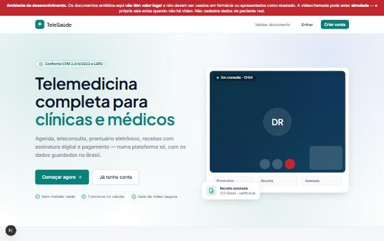
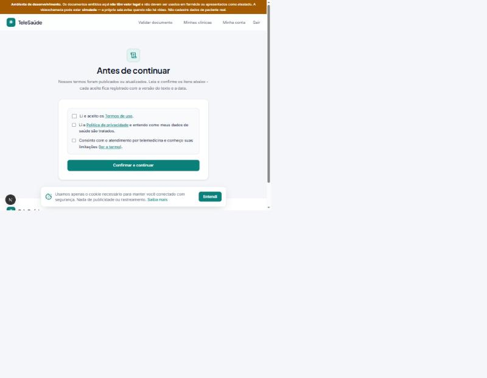
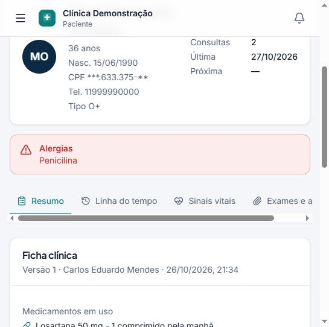
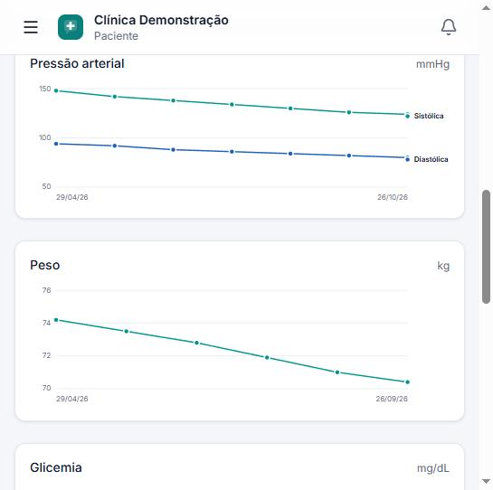
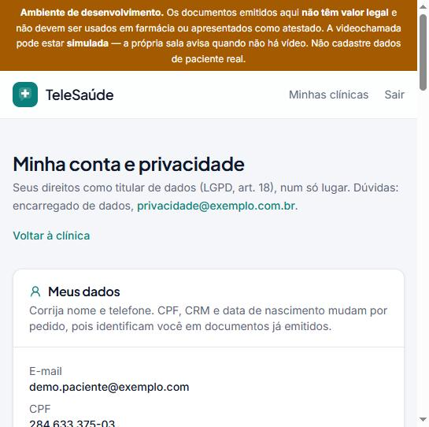
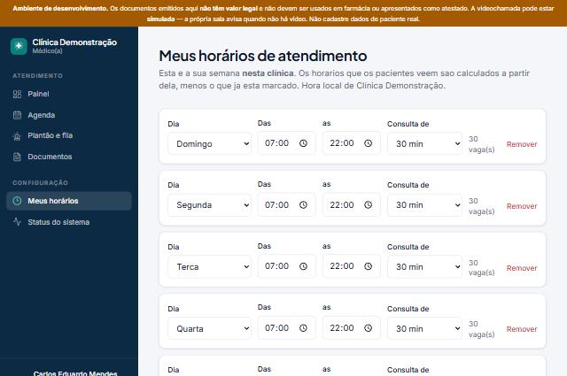
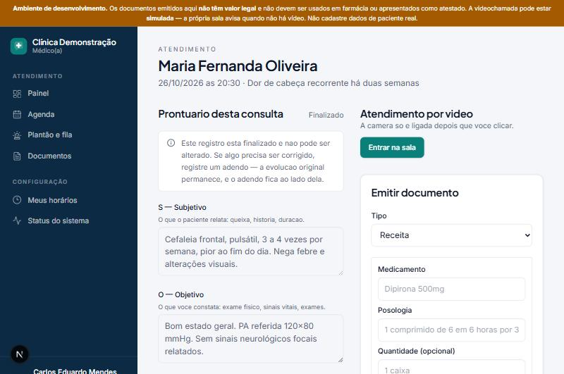
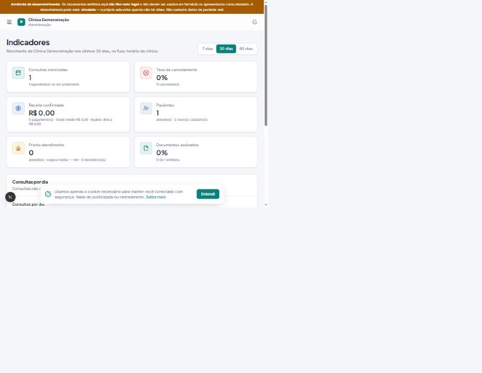
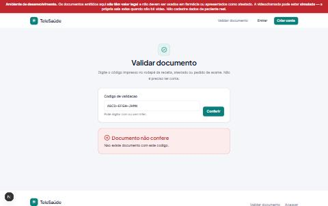

Guia completo da plataforma
Tudo o que pacientes, médicos, recepção e administração precisam saber para usar a plataforma de telemedicina — explicado passo a passo, com palavras simples.
Versão 2.0 · novembro de 2026
O que tem neste guia
- Como usar este guia
- O que é a plataforma
- Quem é quem
- Primeiros passos: criar conta e entrar
- Para o paciente
- Pagamento: cartão ou Pix
- Para o médico
- Para a recepção
- Para a administração
- Dinheiro dos médicos: porcentagens e repasses
- Validar um documento
- Privacidade e segurança
- Quando algo dá errado
- Para quem instala e mantém (parte técnica)
- Roteiro de testes
- Glossário: palavras difíceis
1Como usar este guia
Você não precisa ler tudo. Procure o capítulo da sua função: paciente, médico, recepção ou administração. Cada um é independente.
Ao longo do guia você vai encontrar estas caixinhas coloridas:
Quando aparecer um botão verde, é um botão que você vai tocar na tela. Quando aparecer , é o caminho no menu ao lado (no celular, o menu abre no ícone ☰ no alto da tela).
Palavras difíceis estão explicadas no glossário, no fim do guia.
2O que é a plataforma
A TeleSaúde é uma clínica que funciona pela internet. O paciente conversa com o médico por vídeo, pelo celular ou pelo computador, sem sair de casa. O médico examina pela conversa, escreve tudo no prontuário (a ficha de saúde do paciente) e pode mandar receita, atestado e pedido de exame, todos assinados digitalmente.
Dois tipos de atendimento
| Agora (sem hora marcada) | Agendado (com dia e hora) | |
|---|---|---|
| Pronto atendimento clínico geral | Você entra na fila e o primeiro médico que puder atende você. | Você escolhe o dia, a hora e o médico. |
| Teleconsulta especialista | Você escolhe a especialidade (ex.: ortopedia) e o primeiro especialista disponível atende. | Você escolhe a especialidade, o médico, o dia e a hora. |
3Quem é quem
Cada pessoa tem uma função. A função decide o que ela vê no menu. Ninguém vê o que não precisa ver.
🧑 Paciente
Pede atendimento, paga, faz a consulta por vídeo, vê a própria saúde e baixa receitas e atestados.
Não vê: dados de outros pacientes.
🩺 Médico
Envia os documentos para ser aprovado, fica online para atender, escreve o prontuário, emite documentos e acompanha os próprios ganhos.
Não vê: ficha de quem nunca atendeu.
🗂️ Recepção
Marca consultas para pacientes, acompanha a agenda e a fila.
Não vê: o que o paciente sente nem o prontuário.
⚙️ Administração
Cuida da plataforma inteira: médicos, porcentagens, dinheiro, valores, equipe, privacidade e configurações.
Não vê: o prontuário nem o que o paciente sente.
4Primeiros passos: criar conta e entrar

4.1 Criar a conta
- Na capa, toque em Começar agora (ou Criar conta).
- Escreva seu e-mail e crie uma senha com pelo menos 8 letras e números misturados (ex.: sol2026praia — mas invente a sua!).
- Toque em Criar conta. A plataforma manda um e-mail de confirmação.
- Abra seu e-mail, ache a mensagem da plataforma e toque no link. Vai abrir a tela Confirmar e-mail: toque em Confirmar meu e-mail.
- Preencha Seus dados: nome completo, data de nascimento, telefone e CPF. Se você é médico, marque “Sou médico(a)” e informe o CRM e o estado.
- Leia e marque os três aceites (Termos de uso, Política de privacidade e Telemedicina). Nenhum vem marcado: você decide.
- Toque em Salvar e continuar. Pronto: você já está dentro da plataforma.

4.2 Entrar
- Toque em Entrar, escreva o e-mail e a senha e toque em Entrar.
- Você vai direto para o Painel: a primeira tela, com o que importa hoje.
4.3 Esqueci minha senha
- Na tela Entrar, toque em Esqueci minha senha e escreva seu e-mail.
- Abra o e-mail recebido e toque no link. Crie a senha nova.
5Para o paciente
Agenda
Pronto atendimento
Teleconsulta
Minha saúde
Documentos
Pagamento
Bom dia, Maria
Desenho simplificado do painel do paciente. No celular, o menu da esquerda fica escondido no ícone ☰.
5.1 Ser atendido AGORA (pronto atendimento)
- No menu, toque em e depois em Atendimento agora. Você vê quantos médicos estão online e o valor.
- Escreva em poucas palavras o que você está sentindo (só o médico que atender você vai ler).
- Leia o termo de telemedicina, marque que concorda e escolha como pagar (veja o capítulo 6).
- Você entra na fila. A tela mostra sua posição e mais ou menos quanto tempo falta.
- Deixe a tela aberta. Quando um médico aceitar, ela muda sozinha e abre a sala de vídeo.
- Permita câmera e microfone quando o navegador perguntar. Pronto: é só conversar com o médico.
5.2 Falar com um ESPECIALISTA (teleconsulta)
- No menu, toque em . Aparecem as especialidades que têm médico, com quantos estão online e o preço.
- Escolha a especialidade (ex.: Ortopedia e Traumatologia).
- Escolha Atendimento agora (fila daquela especialidade) ou Agendar horário.
5.3 Marcar um horário (agendar)
- Em Pronto atendimento ou Teleconsulta, toque em Agendar horário.
- Escolha o médico, o dia e toque no horário livre. Escrever o motivo é opcional.
- Com cartão cadastrado: a consulta já fica marcada. Sem cartão: o horário fica reservado por 20 minutos e aparece o Pix para pagar.
- Você recebe avisos no sino 🔔 (e por e-mail): quando marcar, 24 horas antes e 1 hora antes.
5.4 Minha saúde
Em fica a sua ficha: alergias, remédios que você toma, doenças, tipo sanguíneo, as consultas e os exames, do mais novo para o mais antigo.
- Sinais vitais: gráficos de pressão, peso, glicose e batimentos. Você pode anotar medidas feitas em casa (elas ficam marcadas como “informado pelo paciente”).
- Exames: envie resultados em PDF ou foto (até 15 MB). Arquivo disfarçado é recusado.


5.5 Documentos
Receitas, atestados e pedidos de exame aparecem em . Depois que o médico assina, toque para baixar o PDF. Cada documento tem um código de validação: a farmácia confere em /validar.
5.6 Minha conta e privacidade
Em você corrige nome e telefone, baixa uma cópia de todos os seus dados, vê quem abriu seu prontuário e quando, e pode pedir algo sobre seus dados à plataforma (resposta em até 15 dias).

6Pagamento: cartão ou Pix
Você escolhe. As duas formas funcionam para todos os atendimentos.
| 💳 Com cartão cadastrado | 📱 Sem cartão (Pix) | |
|---|---|---|
| Quando paga | Só depois, quando o médico encerra a consulta. | Antes de a consulta começar. |
| Agendado | A consulta fica marcada na hora. | O horário fica reservado por 20 minutos enquanto você paga. |
| Agora (fila) | Você entra na fila direto. | Você entra na fila sozinho assim que o banco confirmar o Pix. |
| Se cancelar | Nada é cobrado. | A plataforma é avisada para devolver o valor. |
6.1 Cadastrar o cartão (opcional)
- No menu, toque em .
- Preencha o nome como está no cartão, o número, a validade e o código de segurança.
- Leia a autorização (“o valor é debitado ao final de cada consulta”) e marque que concorda.
- Toque em Salvar cartão. Aparece “Visa final 4242”, por exemplo.
6.2 Pagar com Pix
- Na tela de pagamento, toque em Pagar com Pix.
- Abra o aplicativo do seu banco e leia o QR Code, ou toque em Copiar código e cole no banco (“Pix copia e cola”).
- Pague no banco e volte para a plataforma. A tela muda sozinha quando o banco confirma.
6.3 E se o cartão não passar?
Às vezes o banco recusa a cobrança no fim da consulta (limite, cartão vencido...). Quando isso acontece:
- Você recebe um aviso no sino 🔔: “Não conseguimos cobrar o seu cartão”.
- No painel aparece a pendência com o botão Pagar agora.
- Pague por Pix (ou tente de novo no cartão, ou cadastre outro).
7Para o médico
7.1 Credenciamento: ser aprovado para atender
Antes de atender, a administração confere quem você é. Isso protege os pacientes e o seu registro: ninguém consegue atender usando o CRM de outra pessoa.
- Crie a conta marcando “Sou médico(a)” com o CRM e o estado. Você vai direto para .
- O que você quer atender: marque Pronto atendimento (clínico geral) e/ou adicione suas especialidades (até 6), com o número de RQE.
- Documentos: envie, um por um, identidade (frente e verso), carteira do CRM, diploma e — se pediu especialidade — o título de especialista. Comprovante de endereço é opcional.
- Selfie: toque em Tirar a foto. No celular abre a câmera da frente. Rosto inteiro, sem óculos escuros nem boné, em lugar claro.
- Leia o texto da conferência de identidade, marque que concorda e toque em Enviar para análise.
- Pronto: o pedido fica Em análise. A resposta chega no sino 🔔: aprovado, precisa de ajuste (com a explicação) ou não aprovado.
7.2 Meus horários (para consultas agendadas)
Em , monte sua semana: dia, hora de início, hora de fim e quanto dura cada consulta. Os pacientes só veem os horários livres a partir daqui.

7.3 Ficar online e aceitar pacientes (atendimento imediato)
Agenda
Atendimento imediato
Pacientes
Documentos
Meus ganhos
Pacientes aguardando você (2)
Desenho simplificado do painel de atendimento imediato.
- No menu, toque em e depois em Ficar online (6 horas).
- Toque em Ativar alertas para ser avisado mesmo com a aba em segundo plano.
- Quando um paciente que você pode atender entrar na fila, ele aparece na lista com um toque sonoro. Você vê o nome e o que ele sente.
- Toque em Aceitar. Você vai direto para a tela do atendimento.
7.4 Atender
- Na tela do atendimento, no alto ficam as alergias, os remédios e os últimos sinais vitais do paciente.
- Entre na sala pelo quadro Atendimento por vídeo.
- Escreva a evolução no formato SOAP (o que o paciente conta, o que você observa, sua avaliação, o plano) e o CID-10. O rascunho é salvo sozinho.
- Ao tocar em Finalizar, a evolução fica trancada: correções depois só por adendo, e o texto original continua guardado.
- Emita os documentos: receita, atestado, pedido de exame, relatório.
- Toque em Encerrar. A sala fecha para os dois e, se o paciente tem cartão, a cobrança acontece agora.

7.5 Assinar documentos
Em , cada documento tem dois caminhos:
- Assinar com certificado em nuvem: CPF + o código de 6 dígitos do aplicativo do seu certificado.
- Assinar fora da plataforma: baixe o PDF, assine no programa que você já usa (sem editar) e envie de volta. A plataforma confere se a assinatura é sua e se nada mudou.
7.6 Meus ganhos
Em você vê: sua porcentagem hoje, quanto ganhou este mês, quanto já recebeu e quanto ainda tem a receber, além da lista de transferências feitas pela plataforma.
8Para a recepção
- Marcar para um paciente: , escolha o paciente, o médico, o dia e o horário. Pelo atendimento da recepção o pagamento é sempre por Pix (o cartão só o próprio paciente usa).
- Agenda: vê todas as consultas e pode cancelar com motivo (fica registrado).
- Pacientes: busca por nome ou CPF e vê o cadastro. O prontuário aparece como “Dados clínicos protegidos”.
- Atendimento imediato: acompanha a fila e quais médicos estão online, sem ver o que os pacientes sentem.
9Para a administração
Tudo fica no grupo do menu. A primeira tela é o Painel da administração.
Médicos
Credenciamentos
Financeiro
Valores
Equipe
Indicadores
Pedidos LGPD
Auditoria
Configurações
Agora
Precisa da sua atenção
Desenho simplificado do painel da administração.
9.1 O painel
- Agora: consultas de hoje, pacientes na fila, médicos online e quanto há para repassar aos médicos.
- Últimos 30 dias: quanto os pacientes pagaram, quanto disso é dos médicos, consultas concluídas e pacientes novos.
- Precisa da sua atenção: tudo o que espera uma decisão sua. Toque na linha e você vai direto para onde resolver.
9.2 Primeira vez: configurar a plataforma
- Entre com o e-mail de administração. Na primeira vez aparece Configuração inicial: nome que os pacientes verão, razão social e CNPJ.
- Vá em e defina a porcentagem padrão do médico (ex.: 70).
- Escolha o responsável técnico (um médico aprovado, exigência do Conselho de Medicina).
- Em , defina os preços (veja 9.5).
9.3 Credenciamentos: aprovar médicos
- Abra . Cada pedido mostra o médico, o CRM e o que ele quer atender.
- Documentos: toque em cada um para abrir. Cada abertura fica registrada.
- Identidade: toque em Ver a selfie ao lado do documento. É a mesma pessoa? O nome bate com o cadastro? Toque em É a mesma pessoa ou Não confirmo (com o motivo).
- CRM: toque em Abrir a busca do CFM, procure o CRM e confira se o nome é o mesmo e a situação é Ativo. Anote o nome e a situação nos campos.
- Decisão: marque o que liberar (pronto atendimento e/ou especialidades comprovadas) e toque em Aprovar. Ou Pedir ajuste / Recusar, sempre com uma mensagem para o médico.
9.4 Médicos
Em aparece cada médico com: se está online, o CRM, o que atende, a porcentagem, quanto ganhou nos últimos 30 dias e quanto tem a receber.
- Toque em Alterar porcentagem e atendimento.
- Escolha Usar a porcentagem padrão ou Porcentagem própria (ex.: 75).
- Ajuste o que ele atende: pronto atendimento e especialidades.
- Toque em Salvar. Vale para as próximas consultas.
Para suspender o acesso de alguém, use (o histórico e os prontuários continuam guardados; reativar devolve o acesso).
9.5 Valores das consultas
São quatro preços, um para cada tipo de atendimento:
| Tipo | Exemplo |
|---|---|
| Pronto atendimento imediato | R$ 60,00 |
| Pronto atendimento agendado | R$ 70,00 |
| Teleconsulta imediata (especialista) | R$ 120,00 |
| Teleconsulta agendada (especialista) | R$ 150,00 |
Você também pode pôr um preço diferente para uma especialidade (ex.: cardiologia R$ 180,00) ou para um médico nas consultas agendadas. Vale sempre o mais específico: médico → especialidade → padrão.
9.6 Financeiro
Em , escolha o período (De / Até) e veja:
- Recebido no período, ganho dos médicos, o que fica com a plataforma e o que foi devolvido.
- Repasse aos médicos: cada médico com o que ganhou e quanto tem a receber (veja o capítulo 10).
- Cobranças recusadas no cartão de pacientes (o paciente já foi avisado).
- Reembolsos a decidir: pagamentos de atendimentos que não aconteceram.
Fazer um reembolso
- Em Reembolsos a decidir, toque em Reembolsar.
- Escreva o motivo e toque em Confirmar reembolso. O dinheiro volta ao paciente pelo serviço de pagamento.
9.7 Equipe, indicadores e pedidos LGPD
- : convidar recepção e administração (médicos entram pelo credenciamento), suspender e reativar acessos, conferir o CRM.
- : gráficos de consultas, cancelamentos, receita, tempo de espera na fila e documentos assinados (7, 30 ou 90 dias). Só números, nunca dado de saúde.
- : pedidos dos pacientes sobre os próprios dados, com prazo de 15 dias e aviso de prazo vencido.

9.8 Auditoria
Em você vê quem fez o quê e quando: aprovações, mudanças de preço e de porcentagem, repasses, reembolsos, prontuários abertos, exportação de dados. Filtre por assunto. Ninguém consegue apagar nem alterar esses registros.
9.9 Configurações
Nome que os pacientes veem, razão social, responsável técnico, fuso horário e porcentagem padrão do médico. Toda mudança fica na auditoria. O CNPJ e a conta de recebimento (serviço de pagamento) são configurados pelo suporte técnico.
10Dinheiro dos médicos: porcentagens e repasses
10.1 Como a conta é feita
Consulta de R$ 100,00 e porcentagem de 70%:
| Quem | Quanto |
|---|---|
| Médico | R$ 70,00 (70% de 100) |
| Plataforma | R$ 30,00 (antes das taxas do serviço de pagamento) |
- Só conta consulta concluída e paga. Cancelada ou reembolsada não conta.
- Cada consulta guarda a porcentagem do dia em que nasceu.
- Quando a conta dá centavos quebrados, arredonda para baixo (ex.: 70% de R$ 33,33 = R$ 23,33).
10.2 Registrar que pagou o médico
- Faça a transferência no banco da empresa (Pix ou TED), como de costume.
- Na plataforma, abra . Na linha do médico, toque em Registrar pagamento.
- Confira o valor (já vem preenchido com o saldo), a data e escreva como pagou (ex.: “Pix 15/11”).
- Toque em Registrar. O “A receber” do médico diminui, e ele vê o pagamento em Meus ganhos.
11Validar um documento
Qualquer pessoa (farmácia, empresa, laboratório) pode conferir se uma receita ou atestado é verdadeiro, sem ter conta:
- Abra o endereço da plataforma e toque em Validar documento.
- Digite o código impresso no rodapé do documento.
- Aparece se é autêntico: tipo, número, data, médico com CRM e só as iniciais do paciente. O conteúdo de saúde nunca aparece.

12Privacidade e segurança
| O que a plataforma faz | Por quê |
|---|---|
| Guarda os dados em São Paulo | Os dados de saúde ficam no Brasil. |
| Cada pessoa só vê o que precisa | A recepção e a administração não leem prontuário. |
| O prontuário finalizado não muda | Correção só por adendo; o original fica guardado (guarda de 20 anos). |
| Tudo fica registrado | Quem abriu, quem mudou, quando. O paciente vê quem abriu o prontuário dele. |
| Cada aceite tem versão, data e IP | Prova do que a pessoa concordou. |
| Videochamada não é gravada | A conversa é só entre paciente e médico. |
| Número do cartão não passa pela plataforma | Vai direto ao serviço de pagamento. |
| Selfie do médico com acesso restrito | É dado biométrico: só a administração, com registro de cada abertura. |
13Quando algo dá errado
| O que aconteceu | O que fazer |
|---|---|
| O e-mail de confirmação não chegou | Olhe o spam; espere 1 minuto e toque em Reenviar o e-mail. Se nunca chega, avise o suporte técnico: falta configurar o envio de e-mails (capítulo 14). |
| O link do e-mail diz que venceu | Tente entrar com a senha. Se a conta não estava confirmada, a tela oferece reenviar. |
| “E-mail ou senha incorretos” | Confira as letras maiúsculas. Use Esqueci minha senha. |
| Não aparece especialidade que eu queria | Ainda não há médico daquela especialidade aprovado. Use o pronto atendimento ou volte depois. |
| Estou na fila e ninguém aceita | Os médicos daquela linha já foram avisados. Se ninguém aceitar em 2 horas, a espera é encerrada e o Pix é devolvido. |
| Não consigo marcar consulta: “pagamento pendente” | Pague a consulta anterior (painel › Pagar agora). |
| A sala de vídeo não mostra imagem | Permita câmera e microfone no navegador (ícone de cadeado ao lado do endereço). Feche outros programas que usam a câmera. |
| Médico: “CRM aguardando verificação” | A administração ainda não conferiu seu CRM. Até lá não dá para emitir documentos nem ficar online. |
| Médico: não recebo pedidos | Confira se está online e se a administração liberou o pronto atendimento ou suas especialidades. |
| Administração: “Acima do saldo” | O valor do repasse é maior do que o médico tem a receber. Confira o número digitado. |
| “A API não respondeu” / “Serviço indisponível” | Espere 30 segundos e tente de novo (o servidor gratuito “acorda” devagar). Persistindo, avise o suporte. |
14Para quem instala e mantém (parte técnica)
Esta parte é para a pessoa que cuida do servidor. Os detalhes completos estão em docs/publicar.md e nos registros de decisão docs/adr-*.md.
14.1 Rodar na sua máquina
pnpm install # instala tudo pnpm configurar # cria apps/api/.env e apps/web/.env.local pnpm verificar # mostra o que falta preencher pnpm db:migrar # cria/atualiza as tabelas (banco de DESENVOLVIMENTO) pnpm dev # site em http://localhost:3000, API em http://localhost:3333
14.2 Variáveis principais (API)
| Variável | Para que serve |
|---|---|
| PLATAFORMA_SLUG | Liga o modo “a plataforma é a clínica”. Sem ela, funciona o modo antigo de várias clínicas. |
| PLATAFORMA_ADMIN_EMAILS | Quem pode fazer a configuração inicial. Obrigatório em produção. |
| PAGAMENTO_PROVEDOR, PAGAMENTO_ACCESS_TOKEN, PAGAMENTO_CHAVE_PUBLICA | Conta de recebimento (Mercado Pago). Sem elas, fora de produção, tudo roda no pagamento simulado. |
| IDENTIDADE_PROVEDOR | manual (padrão, sem custo) ou externo (serviço de reconhecimento facial, com IDENTIDADE_WEBHOOK_SEGREDO). |
| VIDEO_PROVEDOR / VIDEO_API_KEY | Videochamada de verdade (Daily). Sem ela, a sala abre com um aviso no lugar da imagem. |
| EMAIL_PROVEDOR / EMAIL_API_KEY | Avisos por e-mail (Resend). Sem ela, os avisos ficam só no sino. |
14.3 E-mail de confirmação (Supabase)
- Authentication › URL Configuration: Site URL = endereço publicado do site; em Redirect URLs, inclua https://SEU-SITE/**.
- Authentication › SMTP: configure um SMTP próprio. O embutido do Supabase só entrega para a equipe do projeto e tem limite por hora — é a causa de “às vezes não chega”.
- Email Templates: use os modelos com token_hash descritos em docs/publicar.md: assim a confirmação funciona em qualquer aparelho.
14.4 Publicar uma versão nova
- Rode as migrações no banco publicado (CONFIRMAR_BANCO_REMOTO=sim pnpm db:migrar) e pnpm db:verificar-rls.
- Publique a API (Render) e espere /pronto responder.
- Depois publique o site (Vercel).
14.5 Testes automáticos
pnpm typecheck # tipos pnpm test # testes de unidade pnpm test:banco # testes contra um Postgres DESCARTÁVEL (DATABASE_URL_TESTE)
15Roteiro de testes
Faça na ordem, num ambiente de teste. Use uma janela anônima (ou outro navegador) para cada pessoa.
A. Conta e acesso
| Faça | Deve acontecer | |
|---|---|---|
| ☐ | Crie uma conta de paciente. | E-mail de confirmação; depois dos dados, cai no painel sem escolher clínica. |
| ☐ | No cadastro, espere 1 minuto e reenvie o e-mail. | Chega outro e-mail; o mais novo funciona. |
| ☐ | Abra um link de confirmação já usado. | Tela explicando que venceu, com caminho para entrar. |
| ☐ | “Esqueci minha senha” com um e-mail qualquer. | A mesma mensagem, com ou sem conta. |
B. Médico
| Faça | Deve acontecer | |
|---|---|---|
| ☐ | Crie uma conta marcando “Sou médico(a)”. | Vai para Credenciamento; sem acesso a pacientes ou fila. |
| ☐ | Envie os documentos e a selfie sem aceitar o termo. | Recusado. Aceitando: “Em análise”. |
| ☐ | Depois de aprovado, fique online. | A lista de pacientes aguardando aparece. |
| ☐ | Dois médicos aptos online; um paciente entra na fila. | O pedido aparece (com som) para os dois; quem aceita primeiro atende; para o outro, ele some. |
| ☐ | Finalize a evolução e tente editar. | Só adendo é possível. |
C. Paciente e pagamento
| Faça | Deve acontecer | |
|---|---|---|
| ☐ | Sem cartão: Teleconsulta › especialidade › Agendar. | Horário reservado e tela de Pix. |
| ☐ | Cadastre o cartão 4242 e entre no pronto atendimento. | Nada cobrado antes; ao encerrar, aviso “Consulta paga no cartão”. |
| ☐ | Cartão 4000…0002: faça e encerre uma consulta. | Aviso de recusa, pendência e bloqueio até pagar por Pix. |
D. Administração
| Faça | Deve acontecer | |
|---|---|---|
| ☐ | Tente aprovar um credenciamento sem confirmar a identidade. | Botão bloqueado. |
| ☐ | Defina a porcentagem padrão 70% e a de um médico 75%. | Médicos mostra 70% (padrão) e 75% (própria). |
| ☐ | Depois de uma consulta paga de R$ 100,00, abra Financeiro. | Ganho do médico R$ 70,00 (ou 75,00) e “A receber” igual. |
| ☐ | Registre um repasse maior que o saldo. | Recusado: acima do saldo. |
| ☐ | Registre o valor certo; depois cancele com motivo. | Saldo cai e volta; o registro fica riscado. |
| ☐ | Reembolse um pagamento pendente de reembolso. | Some da lista; aparece em “Devolvido”. |
| ☐ | Abra Auditoria › Financeiro. | Aparecem as ações acima, com quem e quando. |
16Glossário: palavras difíceis
- Adendo
- Uma correção acrescentada ao prontuário sem apagar o texto original.
- Assinatura digital (ICP-Brasil)
- Assinatura eletrônica com valor legal, feita com um certificado digital. Prova quem assinou e que o documento não foi alterado.
- Auditoria
- A lista de tudo o que foi feito na plataforma, com quem fez e quando. Ninguém consegue apagar.
- CID-10
- Código internacional que identifica uma doença (ex.: J06 = infecção das vias aéreas).
- CRM
- O registro do médico no Conselho Regional de Medicina. Sem ele ativo, ninguém pode atender.
- Credenciamento
- A análise que a administração faz antes de um médico começar a atender: documentos, identidade e CRM.
- Especialidade
- A área em que o médico se especializou (ortopedia, pediatria...). Comprovada pelo título de especialista.
- Fila
- A lista de pacientes esperando atendimento imediato, na ordem de chegada.
- LGPD
- Lei Geral de Proteção de Dados: a lei que diz como dados pessoais devem ser cuidados.
- Online (médico)
- Quando o médico avisou que está disponível e recebe pedidos de atendimento imediato.
- Pendência
- Uma consulta já feita que ainda não foi paga (o cartão foi recusado).
- Pix
- Pagamento instantâneo pelo aplicativo do banco, com QR Code ou código “copia e cola”.
- Porcentagem do médico
- A parte do valor de cada consulta que fica com o médico.
- Prontuário
- A ficha de saúde do paciente: consultas, evolução, exames, documentos. Guardado por 20 anos.
- Reembolso
- Devolver ao paciente o dinheiro de um atendimento que não aconteceu.
- Repasse
- A transferência que a plataforma faz ao médico do que ele ganhou.
- Responsável técnico
- O médico que responde pela plataforma perante o Conselho de Medicina.
- RQE
- Registro de Qualificação de Especialista: o número que comprova a especialidade no Conselho.
- Saldo a receber
- Tudo o que o médico ganhou menos o que já foi transferido para ele.
- SOAP
- Jeito organizado de escrever a consulta: Subjetivo (o que o paciente conta), Objetivo (o que o médico vê), Avaliação e Plano.
- Teleconsulta
- Consulta com especialista por vídeo.
- Pronto atendimento
- Atendimento com clínico geral, para queixas do dia a dia.
Os textos de Termos de uso e Política de privacidade são uma base técnica e devem passar por revisão jurídica antes da publicação. Este guia descreve o comportamento da plataforma; ele não é um parecer jurídico.